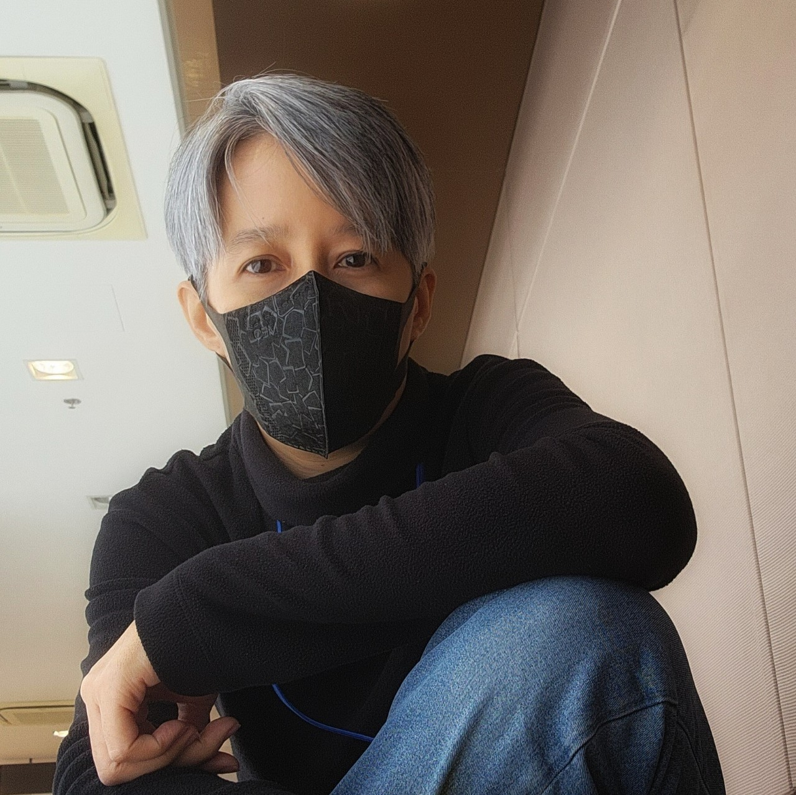

|  |
|
| YEAR | PROJECTS |
|---|---|
| 2021 - Present | Project Manager in :
|
| 2016 |
Project Manager in the Warehouse System implementation and Network System expanding
KKC Bearing Service Company Limited |
| 2011 to 2015 |
Project Manager in the IT Outsourcing Infrastructure Program for 6 sites of Kuwait Airways, Thailand Base
Hasibat Information Technologies, Kuwait |
| 2009 to 2011 |
Project Manager in the ordinary classroom to the modern Computer Laboratory Project I, II and III
Rajamangala University of Technology Tawan-Ok |
| 2008 |
Project Manager in the ICT System Audit Project
United Nations Conference Center |
| 2004 |
Project Coordinator in the Network System Audit Project
Mekong Institute |
| 2004 |
Project Coordinator for Reich Network Company Limited, Thailand in the Computer Servers and Network System Maintenance Project
Parliament |
| 2003 |
Project Coordinator in the IT System Audit Project
Judicial Training Institute |